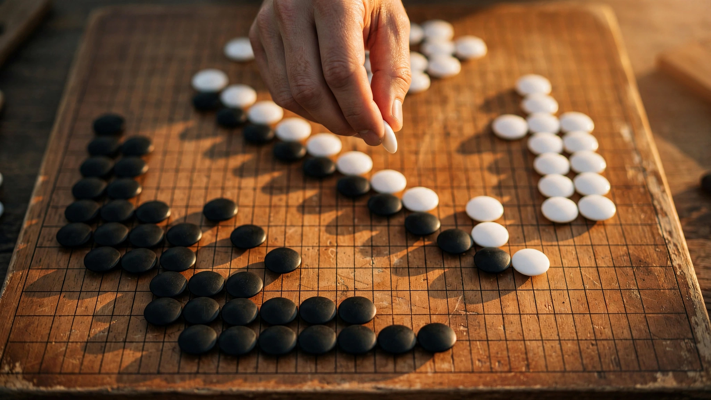

The World’s Most AI-Like Go Player Just Beat AI by Playing Like a Human. The Math Explains Why.
Shin Jin-seo matches KataGo’s recommended moves 37.5 percent of the time, the highest concordance of any professional player and 31.6 percent above the average. On Tuesday in Seoul, he won their three-game series 2–1 by abandoning that approach entirely. The implied territory gap across all three games reveals a strategic asymmetry that extends well beyond a 19×19 grid.

Thirty-seven point five percent. That is how often Shin Jin-seo, the highest-rated Go player alive, plays the same move that KataGo, the strongest open-source Go engine on Earth, would play in the same position. A 2022 study by the Korean Baduk League measured this concordance rate against a professional average of 28.5 percent, making Shin’s play more AI-aligned than any other human in the game’s 2,500-year history. His nickname among Korean Go fans is “Shintelligence.” On Tuesday afternoon in Seoul, he defeated the machine whose moves he has spent six years learning to replicate, and he did it by doing the opposite of what made him famous.
Shin won the SSEN Math·Hankyung Gishinjeon series 2–1 against KataGo, becoming the first professional Go player to take an official series from a state-of-the-art Go engine. Organized by the Korea Baduk Association and hosted by The Korea Economic Daily, the match was played under a two-stone handicap, meaning Shin placed two black stones on the board before KataGo made its first move, giving him an estimated 18 to 18.5 points of territorial advantage at the outset of each game. He had five hours on the clock per game. KataGo played each move within 20 seconds.
That handicap structure produced three data points that, taken together, tell a story the headlines have not.
The Implied Territory Gap
In Game 1, on July 17, Shin reverted to instinct and launched an early tactical counterattack. KataGo responded with what Shin later described as a “lethal counter-strike,” and he lost decisively despite starting with an 18-point head start. For the AI to overcome that deficit entirely, its raw play had to exceed Shin’s by at least 18 points of territory in that single game.
In Game 2, on July 20, Shin abandoned tactical fighting. He played defense, surrendered the initiative, and won by 4.5 points. With the handicap built in, that result implies KataGo’s raw advantage was approximately 13.5 points: 18 minus 4.5. Still enormous. Still not enough.
In Game 3, on Tuesday, Shin played what he called a game that “took shape just as I envisioned.” He held a territorial framework through the mid-game, launched a measured attack on move 80, and won by 11.5 points in 221 moves. Implied raw gap: roughly 7 points.
Arrange those numbers in sequence. Aggressive human Go against KataGo: 18-plus-point raw deficit. Disciplined, defensive human Go against KataGo: 13.5 points, then 7. The skill gap between the best human alive and the best open-source AI is not a fixed quantity. It is style-dependent, and the variance across the three games—from 18-plus to 7—is itself the finding.
Why the Gap Shrinks When the Human Stops Fighting
Shin provided the explanation himself. “AI’s weakness is that it is too perfect,” he told The Korea Economic Daily after the final game. “Even when it falls behind, it refuses to take low-probability gambits to turn the game around.”
This is a specific, quantifiable strategic asymmetry, and game theorists have a name for the class of strategy that exploits it. When the stronger player optimizes for expected value across all possible outcomes, the weaker player’s best response is to reduce variance: simplify the board, eliminate complications, and convert the game into a slow territorial grind where the AI’s computational depth advantage produces diminishing returns because there are fewer branching paths to explore. In tactical combat—the kind of Go that produces 10170 possible board configurations—brute calculation dominates. In positional, territorial play, the advantage shifts toward pattern recognition and judgment, where the gap between 3,697 Elo (Shin, the highest human rating ever recorded) and whatever KataGo runs internally is smaller than the gap in tactical trees.
Shin did not discover a weakness in KataGo’s neural network. He discovered a weakness in the GAME FORMAT of aggressive Go when played against a machine that calculates faster than any human. That is a different and more portable insight.
The Concordance Paradox
The Korean Baduk League’s concordance data make this result even stranger. Shin’s 37.5 percent move-match rate is not just the highest among active players; it represents a 31.6 percent premium over the professional mean of 28.5 percent. Every morning, according to MIT Technology Review, Shin sits at his computer, opens KataGo, and traces the glowing “blue spot” that represents the engine’s suggestion for the best next move. He rearranges stones on the digital grid to understand the machine’s thinking. “It’s almost like an ascetic practice,” he has said.
He became world No. 1 because of this practice. “KataGo became significantly stronger around 2020, which coincided with the period I rose to world No. 1,” Shin said. “Everyone studied with KataGo, but I believe it played a massive role in helping me reach the top.” He trained like the machine. He rose to the top by being the most machine-like human. And then he beat the machine by being the least machine-like version of himself.
It resolves cleanly once you separate training from competition. High AI concordance is a training metric: it measures how thoroughly a human has absorbed the strategic principles the AI has discovered. But in competition against that same AI, deploying those principles plays directly into the machine’s strengths. KataGo already knows its own best moves and has computed responses to all of them. What it has not trained against extensively is a human who deliberately chooses suboptimal-looking moves in the opening to create a positional structure that rewards patience over calculation.
“I simply copied AI moves, which led to heavy fighting and frequent, easy losses,” Shin said after the series. “This series taught me that rather than trying to imitate AI, it is far more important to build the board according to my own style.”
The Ten-Year Trajectory
In March 2016, Lee Sedol, then rated approximately 3,540 Elo, played Google DeepMind’s AlphaGo on even terms and lost 1–4. His single victory in Game 4—the legendary “God’s Touch” move on turn 78—remains the most celebrated move in modern Go. A year later, an upgraded AlphaGo Master defeated then-world No. 1 Ke Jie 3–0 on even terms, with the closest game decided by half a point. Ke wept during the final match. That same year, AlphaGo Zero, trained with zero human data, beat AlphaGo Lee 100 games to zero. Google DeepMind retired the program.
Ten years later, the numbers look like this. AI has improved dramatically: KataGo is faster and more accurate than any AlphaGo variant, reads the whole board rather than analyzing small sections, and maximizes total score rather than merely win probability. Shin has improved too: Shin’s 3,697 Elo represents a 157-point gain over Lee Sedol’s 2016 rating, a 4.4 percent increase. That gain is entirely AI-driven. Shin trained with the machine. Over a third of the moves by top professionals now replicate AI recommendations, according to a 2023 Korean Baduk League study. The first 50 moves of each game are often identical to what AI suggests. An entire generation of Go players has been remade in the machine’s image.
Lee Sedol, who retired in 2019, put it bluntly to MIT Technology Review: “Before AI, we sought something greater. I learned Go as an art. But if you copy your moves from an answer key, that’s no longer art.” Shin’s series result complicates that epitaph. He copied the answer key for six years, then closed it at the moment it mattered, and that combination of absorbed knowledge and deliberate deviation is what produced the victory.
What This Means Beyond the Board
Go is a toy domain, but the concordance paradox is not. In every field where AI now trains the next generation of human practitioners—radiology, legal research, software engineering, financial analysis—the same structural question applies. How much of your improvement comes from mimicking the AI, and at what point does that mimicry become a liability?
A radiology resident who trains on AI-flagged scans will learn faster than one who does not. But the resident who can only see what the AI sees will miss what the AI misses, and the cases that matter most clinically are precisely the ones the AI handles worst. A junior software engineer who writes code by following Copilot suggestions will produce working software faster than one who does not. But the engineer who can only produce what the AI suggests cannot debug novel failure modes that the AI has never encountered, because those failures exist outside the training distribution. Shin’s series result is the first high-stakes empirical demonstration of a principle that generalization theory has long predicted: the student who absorbs the teacher’s knowledge and then departs from it will outperform the student who merely copies, because the teacher’s strategy space is known and therefore exploitable by anyone who shares it—including the teacher itself.
Strongest Counterargument
The most obvious objection is that a two-stone handicap series is not a real test of competitive Go. Shin did not beat KataGo on equal terms. He beat it with a 18-point head start, which, in professional Go where average victory margins run 3–5 points, is roughly equivalent to spotting a grandmaster a rook in chess. No serious Go analyst believes Shin could take a single game from KataGo without the handicap, and Shin himself has said as much: “It is impossible to beat AI on even terms at this point.” The series demonstrates that a calibrated handicap can produce a competitive match, and that the gap is style-dependent, but it does not demonstrate that humans are closing the raw skill gap. AI engines have improved more than humans have since 2017, and if KataGo’s developers were to optimize specifically for handicap play—which it currently has not been trained on extensively—the gap might widen again even under these conditions. Hong Beom-jun, the series co-sponsor’s CEO, announced plans to host the same event next year, adding that organizers are working to further level the playing field. Whether the handicap shrinks, holds, or grows will be the real longitudinal test.
Limitations
The implied territory gap calculations use the two-stone handicap value of approximately 18–18.5 points as reported by the match organizers and do not account for the strategic asymmetry that the handicap itself introduces. These gap numbers are directional, not precise, because Go point margins depend on game flow and cannot be cleanly decomposed into “handicap contribution” versus “raw skill gap.” The concordance rate of 37.5 percent dates to a 2022 Korean Baduk League study cited by MIT Technology Review; Shin’s concordance with KataGo’s latest network, which is substantially stronger than the 2022 version, may differ. There is no public record of KataGo’s internal Elo on a scale comparable to human Elo, so direct cross-system Elo comparisons are not possible. A sample size of three games is far too small for statistical confidence about the style-dependent gap hypothesis; a 30-game series under controlled conditions would be needed to test it properly. Generalization to other domains (radiology, software engineering) is an argument by structural analogy, not empirical evidence from those fields.
The Bottom Line
Shin Jin-seo spent six years becoming the most AI-like human Go player in history. That training took him to world No. 1. It gave him a concordance rate nearly a third higher than his peers. It also nearly cost him this series: in Game 1, playing the way KataGo taught him to play, he was destroyed. He won Games 2 and 3 by playing the way a human plays when the human knows what the machine will do and deliberately chooses something else.
Train on the AI. Absorb everything it knows. Then, in the moment that matters, play your own game. Whether your board has 361 intersections or is a radiology suite or a codebase or a trading floor, the concordance paradox says the same thing: the most dangerous competitor is not the one who plays like the machine but the one who learned from the machine and chose to play differently. If you use AI tools in your work, audit how much of your output matches what the tool would produce without you. If that number is climbing, you are not getting better. You are becoming redundant.